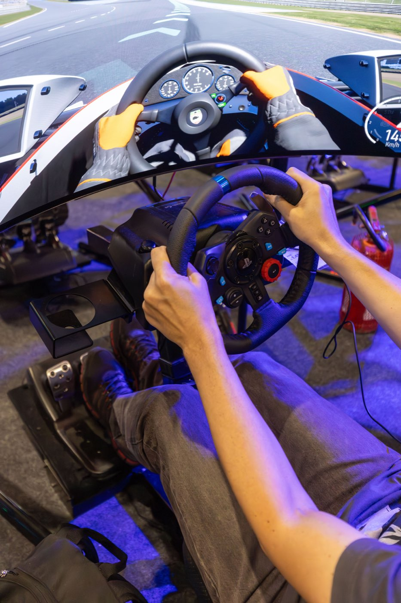

Look where you want to go
Try to look toward the next part of the track instead of staring right in front of the car. This gives you more time to react.
02 / THE FOUNDATION
The fastest lap isn’t always made by driving with big aggression. Clean, consistent racing is the key: make the car predictable, then build speed one small step at a time.
OUTSIDE · APEX · OUTSIDEKEEP IT SMOOTH

Pick one track and one car. Keep the same settings while you practise so it’s easier to notice what you’re improving.
Try to look toward the next part of the track instead of staring right in front of the car. This gives you more time to react.
Choose a clear marker, like a board or a change in the barrier. Brake before the corner, then ease off as you turn in.
A useful starting point is to begin wide, move toward the inside near the middle, then let the car run back out. The best line can change with the corners around it.
Drive five laps at a comfortable pace. For the first few, focus on staying on track. Then choose one corner and try to brake at the same marker each lap. If you make a mistake, reset and try again—every lap is useful practice.